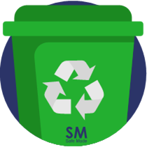

Galería de Reciplanet

Contenedor Blanco
Material biodegradable como servilletas, papeles y cartones.

Contenedor Verde
Residuos orgánicos como los restos de comida, desechos agrícolas etc.
Contendor Negro
Residuos aprovechables como plástico, botellas, latas, metales etc.
Las calles
En los sitios en donde se almacenan las basuras no hay una buena distribucción de las basuras, esto genera un descontrol inmenso al momento de emplear el reciclaje.

Animales aéreos
Las aves confunden los plásticos con alimentos y, en consecuencia, acaban muriéndose de hambre, ya que llenan el estómago de plásticos indigeribles